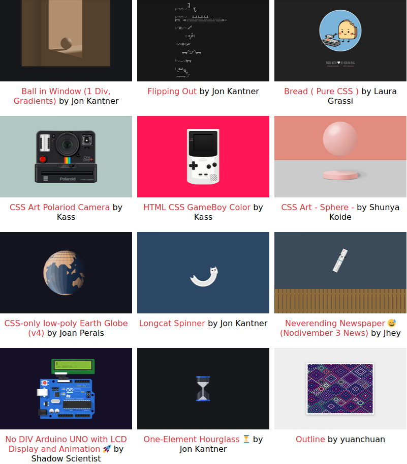

CSS Art Experiment
Create a netnet project experimenting with CSS by creating a piece of "CSS Art". While CSS is typically used to change the default styles and layout of content we structure with HTML, for CSS artists the CSS code is the content, and pushing this language to it's creative limits is the focus. I've discussed this perspective and demonstrated many of the techniques employed by these artsits in each of the CSS tutorials we've completed thus far, but for more inspiration take a look at the works I've curated into the CSS Art Gallery linked below.
Make sure to:
- Submit your experiment as a netnet "project" (rather than a "sketch"). Refer to these notes if you've forgotten how.
- Focus on the CSS code, keep HTML to a minimum and avoid using any assets (no JavaScript either). Remember the point of CSS art is experimenting with what you can make using only CSS code.
- Keep your indentation clean. It doesn't have to be exactly the way netnet would do it (although your welcome to use it's
tidyCode()feature), but it should have some rhyme/reason to it.
